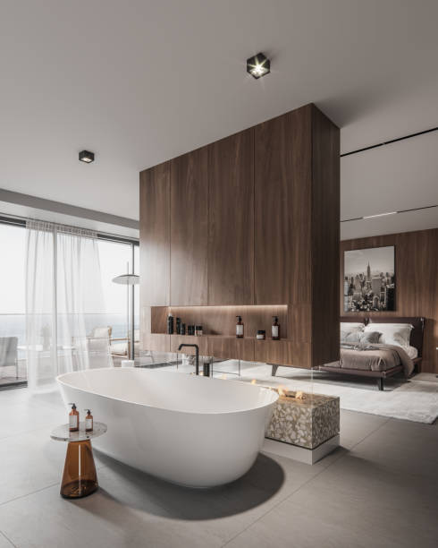
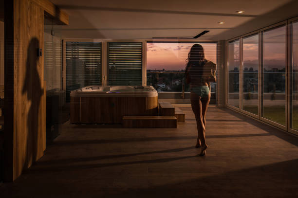
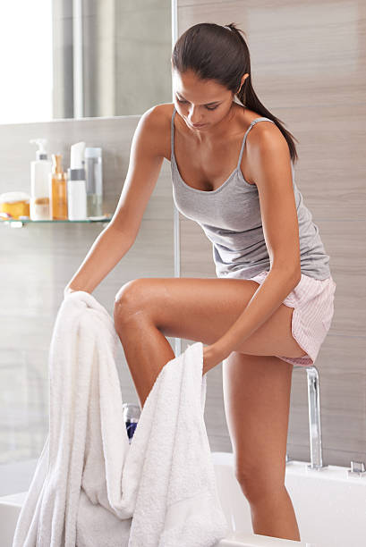
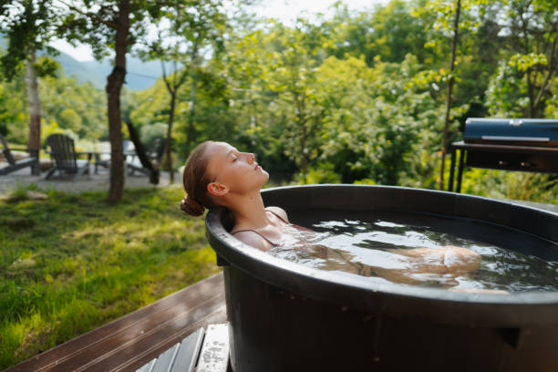

Experience comfort and safety with premium walk-in tubs in Highwood Illinois . Our expertly installed tubs feature slip-resistant surfaces and hydrotherapy options, ensuring accessibility and relaxation for every home.
Click Here To Call Us (877) 848-1711Enhance your bathing experience with our premium walk-in tubs, designed for comfort, safety, and accessibility. In Highwood Illinois we specialize in providing top-quality walk-in tubs that cater to individuals with mobility challenges or those simply seeking a relaxing soak in a safe environment.
Our walk-in tubs feature easy-to-open doors, low step-in thresholds, and secure seating to ensure you enjoy a worry-free bath every time. Equipped with advanced hydrotherapy jets and ergonomic designs, our tubs promote relaxation, improve circulation, and alleviate muscle pain. Whether you’re upgrading your bathroom for added safety or luxury, our range of customizable options ensures the perfect fit for your needs and home décor.
We pride ourselves on delivering unmatched customer service and professional installation in Highwood Illinois . Our team works closely with you to assess your bathroom’s layout and recommend the ideal solution for your space. Each tub is crafted with high-quality materials to ensure durability and long-lasting performance.
Don’t compromise on comfort or safety—choose a walk-in tub tailored to your lifestyle. Contact us today in Highwood Illinois to explore our collection and transform your bathroom into a haven of relaxation and security. Experience peace of mind with the best walk-in tubs in Highwood Illinois !
Residential & commercial Walk In Tubs
Quality services at affordable prices
Immediate 24/ 7 emergency services


When it comes to upgrading your bathroom in Highwood Illinois a walk-in tub can provide both luxury and practicality, enhancing your home's accessibility and aesthetic appeal. Walk-in tubs come in a variety of styles and designs to complement any home, ensuring a perfect fit for your needs and preferences.
One popular style for homes in Highwood Illinois is the soaking walk-in tub, designed for relaxation with a deep, comfortable interior. Its sleek lines and modern features make it a stylish addition to any bathroom. For homeowners who want a more therapeutic experience, the whirlpool walk-in tub offers soothing jets that target sore muscles and improve circulation, ideal for anyone seeking relief from stress or chronic pain.
For those looking for space-saving solutions in smaller bathrooms, the corner walk-in tub utilizes corner space efficiently, offering a compact yet luxurious design. Walk-in tubs with built-in seating are another great option, providing extra convenience and comfort. These tubs often come with wide entry doors, making it easier to step in and out without any hassle.
No matter the design, walk-in tubs offer valuable benefits for homeowners in Highwood Illinois from increasing property value to enhancing safety and comfort. Whether you’re remodeling your bathroom or installing a new tub, investing in a walk-in tub is a smart choice that brings both function and style to your Highwood Illinois home.
Residential & commercial Walk In Tubs
Quality services at affordable prices
Immediate 24/ 7 emergency services
Elevate your bathroom's design with our custom tile surrounds for walk-in tubs. By allowing you to choose colors, patterns, and finishes, custom tile surrounds enhance the aesthetic appeal of your bathroom while providing a practical solution to waterproofing and maintenance.
, our custom tile surrounds are crafted with precision to fit seamlessly around your new walk-in tub. This not only elevates the overall appearance of your bathroom but also reflects your unique style and preferences, making your bathing area truly yours.
When you collaborate with us for your tile surround needs, you receive expert guidance on design choices and materials. Our skilled installers ensure that the final product not only looks spectacular but also functions effectively for years of enjoyment.

Our Safe Step walk-in tubs are designed with your safety and comfort in mind. Featuring a low-entry threshold, anti-slip flooring, and built-in grab bars, these tubs make it easy and safe for anyone to enjoy a relaxing bath without the fear of slips or falls. The ergonomic designs ensure ease of use while maintaining a stylish appearance.
By choosing our Safe Step walk-in tubs, you’re making a proactive decision regarding your safety and well-being. Our expert installation team is dedicated to providing a seamless experience, ensuring that your new tub fits perfectly into your home while meeting all your safety needs. Experience peace of mind and comfort with our innovative Safe Step solutions in Highwood Illinois .

Discover the numerous therapeutic benefits of our walk-in tubs. Designed not only for relaxation but also for pain management and rehabilitation, these tubs can help alleviate common ailments associated with aging and mobility issues. From improved blood circulation to decreased joint pain, our therapeutic walk-in tubs offer physical and mental rejuvenation.
In Highwood Illinois we provide an array of options that cater to specific health challenges. Our walk-in tubs include hydrotherapy and adjustable jets, allowing for personalized therapy sessions tailored to your needs.
Why choose us for your therapeutic walk-in tub? Our expert team understands the importance of tailored solutions that cater to your unique health requirements. From the moment you consult with us, we prioritize your wellness and ensure you receive the perfect tub for your therapeutic needs.

Investing in a walk-in tub is a significant decision, and we believe that everyone should have access to this life-enhancing upgrade, regardless of budget. Our flexible financing options make it easier than ever to bring safety and comfort into your home without breaking the bank.
In Highwood Illinois we offer various financing plans that allow homeowners to find a solution that best fits their financial situation. Transparent options mean you can enjoy peace of mind knowing you have a handle on your financing without hidden fees or unexpected costs.
Choosing us means aligning with a company that values accessibility for all. Our commitment to customer satisfaction extends to financial services, ensuring you receive the support needed every step of the way towards a safer bathing experience.

Walking the line between quality and affordability is where we excel. Our affordable walk-in tub solutions are crafted without compromising safety, accessibility, or style. We believe that everyone deserves to experience the luxury and safety of a walk-in tub, which is why we provide a range of options that fit every budget.
In Highwood Illinois our affordable walk-in tubs come with various safety features and styles, ensuring you find the ideal solution for your specific needs and budget constraints. By supplying high-quality products at competitive prices, we empower individuals to prioritize their safety without financial strain.
Choosing us means you partner with experts dedicated to providing exceptional value. From consultation to installation, our team ensures you receive an affordable and desirable bathing solution tailored to your expectations.
Regular maintenance and timely repairs are essential for keeping your walk-in tub in optimal condition, ensuring safety and longevity. Our professional team at Walk In Tubs offers comprehensive maintenance and repair services in Highwood Illinois ensuring your walk-in tub continues to perform at its best. We understand the intricacies of walk-in tub systems, and our commitment to customer service guarantees quick responses and high-quality workmanship. By choosing us, you are assured of professional service and care, allowing you to enjoy your walk-in tub without any worries.

For those suffering from chronic pain or discomfort, our walk-in tubs provide a viable solution that incorporates the therapeutic benefits of warm water and hydrotherapy. These tubs help alleviate various pain conditions, providing a sanctuary where you can relax and soothe sore muscles and joints.
, our walk-in tubs designed for pain management include features that promote healing, such as adjustable jets, seat warmth, and ambient lighting to create a tranquil and comfortable setting.
Choosing our services means recognizing your pain management needs. Our professionals consult with you to understand your unique challenges and tailor solutions that enhance your comfort and overall well-being.

Aging in place is an important consideration for many seniors who wish to maintain independence in their own homes. Our walk-in tubs come equipped with features designed specifically for this purpose, ensuring safety and accessibility while providing an inviting bathing experience.
Low thresholds, slip-resistant surfaces, and easy-to-reach controls are just a few of the key features that make our walk-in tubs ideal for aging-in-place solutions in Highwood Illinois . These thoughtful designs help to reduce the risk of falls and make bathing a more enjoyable and manageable experience for seniors.
By choosing our walk-in tub solutions, you are ensuring that you or your loved ones can age comfortably in place. Our expertise in consultation and installation reflects our commitment to enhancing the quality of life, making safety and comfort priorities in your home.
Years Experience
Expert Technicians
Satisfied Clients
Compleate Projects
At Freedom Walk-In Tubs, we understand the importance of safety, comfort, and independence, which is why we proudly offer top-of-the-line walk-in tubs designed to transform your bathroom experience. Serving Highwood Illinois and surrounding areas, our tubs are engineered to provide peace of mind and a sense of freedom to individuals with mobility challenges or those seeking a luxurious, therapeutic bathing experience.
Our walk-in tubs are built with high-quality materials and advanced features, ensuring durability and safety. Equipped with slip-resistant floors, low-threshold entryways, and easy-to-use controls, our tubs allow for hassle-free access, reducing the risk of slips or falls. Plus, with built-in hydrotherapy jets, air massagers, and heated surfaces, every bath becomes a rejuvenating escape from the stresses of the day.
What sets Freedom Walk-In Tubs apart is our commitment to delivering a personalized experience. We work closely with our customers to understand their unique needs, ensuring the perfect fit for their bathroom space and requirements. Our installation team is highly trained, ensuring each tub is installed with precision and care, providing you with years of reliable service.
We are proud to serve Highwood Illinois and the nearby communities, helping people regain their independence while enhancing their daily bathing routines. If you're looking for a safe, comfortable, and enjoyable bath experience, trust Freedom Walk-In Tubs to deliver exceptional results.
Choose us for quality, care, and the best in walk-in tub solutions across Highwood Illinois .
In today's fast-paced world, taking time to unwind and relax is essential, especially in the comfort of your home. Luxury walk-in tubs offer a unique combination of safety, comfort, and exquisite design, making them an ideal addition to any bathroom. The perfect blending of functionality and elegance, our luxury walk-in tubs feature high-quality materials that elevate your bathing experience to new heights. With features like deep soaking, customizable jets, and beautifully crafted finishings, they're tailored to meet the most discerning tastes. Our skilled team at Walk In Tubs specializes in providing the finest luxurious options in Highwood Illinois ensuring you receive a product that not only meets your bathing needs but also enhances the aesthetics of your space. Choosing us means you benefit from our years of experience, customer-first philosophy, and a commitment to excellence in every installation.
Hydrotherapy has been recognized for its therapeutic benefits, including pain relief and improved circulation. Our hydrotherapy walk-in tubs are designed with state-of-the-art jet technology that harness the power of water to provide a soothing and rejuvenating bathing experience. They stimulate muscle relaxation, relieve joint pain, and promote overall well-being. At Walk In Tubs, we understand the importance of stress relief and physical health and offer tailored solutions in Highwood Illinois that fit your lifestyle. Each tub is designed with safety and ease of use in mind, ensuring that you can enjoy the therapeutic benefits without worry. Our dedicated team is here to help you choose the perfect hydrotherapy walk-in tub for your home, and we pride ourselves on our exceptional customer service and craftsmanship.
Just because you have a small bathroom doesn't mean you have to compromise on comfort and safety. Our compact walk-in tubs for small bathrooms are designed to maximize space without sacrificing luxury and accessibility. These tubs feature a thoughtful design that enables full functionality in smaller footprints, allowing homeowners to enjoy the benefits of a walk-in tub without the need for extensive renovations.
Our compact tubs are perfect solutions for seniors, those with mobility challenges, or anyone looking for an efficient bathing solution. We tailor our installations to fit perfectly within your existing space, ensuring that you can enjoy a relaxing soak without the hassle of extensive alterations. Our expert team is dedicated to providing a seamless experience, from design to installation. Choose us for compact walk-in tubs that prove safety, style, and efficiency can coexist.
Accessibility should never be an afterthought. Our wheelchair-accessible walk-in tubs are designed with mobility challenges in mind, ensuring that everyone deserves the luxury of a soothing bath. These tubs feature wider doors, low thresholds, and non-slip flooring, making them easy and safe to use for individuals who require assistance.
, our commitment to inclusivity drives us to provide the best wheelchair-accessible walk-in tubs on the market. Every model features user-friendly designs and safety enhancements that provide peace of mind for both the user and their caregivers. Whether you're upgrading an existing bathroom or looking to create a new accessible space, we have the perfect solution for you.
Choosing our services means having access to knowledgeable professionals who care about your safety and comfort. We focus on durable materials and high-quality installations, ensuring your tub remains a safe haven for years to come.
Experience the ultimate in relaxation with our walk-in tubs equipped with air jet therapy. These innovative tubs provide a gentle yet effective hydrotherapy experience that can soothe sore muscles and improve overall mood. The air jets create a soft, bubbling effect that surrounds your body in warm water, offering a spa-like environment in your own home. Our team at Walk In Tubs understands the importance of mental and physical wellness and is committed to helping you enhance your home with the benefits of air jet therapy. Our knowledgeable staff will help you explore the available options, ensuring you get a walk-in tub that not only meets your safety needs but also enhances your relaxation and wellbeing.
Upgrade your bathing experience with the addition of heated seat technology in our walk-in tubs. Imagine stepping into a warm, inviting seat that cradles you as you relax in soothing water. Our walk-in tubs with heated seats are perfect for those who want to combine comfort with functionality.
Heated seats not only provide a luxurious touch but also offer numerous health benefits, especially for individuals suffering from back pain or stiffness. The gentle warmth can promote relaxation and reduce tension, making your bathing experience more enjoyable and therapeutic. Our walk-in tubs come with easy-to-use controls, allowing you to adjust the heat to your preference.
When you choose us for your heated seat walk-in tub installation, you can rest assured that you are making a wise investment in your home’s comfort and safety. Our team of highly skilled professionals is dedicated to providing high-quality services, ensuring your satisfaction long after the installation is complete.
A dual-drain system in walk-in tubs ensures rapid drainage, enhancing safety for users by minimizing the waiting time to exit the tub after a bath. This feature is particularly beneficial for seniors and individuals with mobility challenges, providing peace of mind during and after the bathing experience. Our experts at Walk In Tubs design walk-in tubs with dual-drain systems specifically for those who prioritize safety and efficiency. We pride ourselves on our commitment to providing accessible and innovative solutions for our clients. When you choose us, you’re choosing a company that values quality and safety above all else, ensuring your installation meets all your needs.
Everyone deserves a safe and comfortable bathing experience. Our bariatric walk-in tubs in Highwood Illinois are designed with enhanced width and weight capacity to provide stability and support for larger individuals. Equipped with features like reinforced seating and slip-resistant surfaces, these tubs ensure a safe and enjoyable bathing experience.
When you choose our bariatric walk-in tubs, you’re selecting a product that prioritizes safety and comfort. Our customized solutions cater to your unique needs, ensuring that every aspect—from design to installation—meets your highest expectations. We stand by the quality of our products and our commitment to providing the best customer service in the industry. Trust us to bring safety and comfort into your bathing routines.
Immerse yourself in tranquility with our soaking walk-in tubs, designed for individuals who appreciate the restorative qualities of a long soak. These tubs provide deep soaking capabilities, allowing you to unwind and relieve stress in the comfort of your own home.
Our soaking walk-in tubs prioritize safety and accessibility, featuring low thresholds for easy entry, slip-resistant surfaces, and built-in support features. Soaking is known for its therapeutic benefits, from improving circulation to reducing pain, and our models are tailored for those who want to enjoy these advantages safely and comfortably .
By choosing us, you are ensuring a high-quality product backed by exceptional customer service. We offer personalized consultations to help you choose the right model, followed by professional installation to meet all your specific needs. Experience the joy of soaking without the hassle and worries of traditional bathtubs.
Share the joy of relaxation with our two-person walk-in tubs . Designed for couples or caregivers and their loved ones, these spacious tubs offer the comfort and safety of a walk-in design while accommodating two bathers. With features like dual seating and independent controls, our tubs are the perfect solution for shared bathing experiences.
Choosing our two-person walk-in tubs means choosing a shared experience that enhances connection and well-being. Our installation experts ensure that your new tub is safely and efficiently integrated into your space, allowing you to enjoy quality time with loved ones while prioritizing safety. Come experience the luxury of relaxation and companionship with our expertly crafted walk-in tubs.
Every home is unique, and our custom walk-in tub installation services are designed to cater to your specific needs. We understand that your bathroom’s layout and design play crucial roles in your comfort and safety. Our skilled professionals work closely with you to customize a walk-in tub that fits perfectly in your space while meeting all safety standards.
By opting for our custom installation services, you’re ensuring that your walk-in tub is tailored to your needs and preferences. Our dedicated team will evaluate your bathroom and provide personalized solutions, ensuring that your installation process is as smooth and straightforward as possible. Choose us for unparalleled service and custom solutions that prioritize safety, function, and style.
Transforming your existing bathtub into a walk-in tub can significantly improve safety and accessibility in your home. Our expert bathtub-to-walk-in tub conversion services offer a seamless transition that allows you to enjoy the benefits of a walk-in tub without the need for extensive remodeling.
Our team understands the concerns of homeowners wanting a safer, more accessible bathing option and we provide solutions that can be tailored to your space and style. The conversion process is efficient, minimizing disruption while maximizing safety features such as low thresholds and grab bars.
Choosing us for your bathtub-to-walk-in tub conversion means you are partnering with a team that values quality and customer satisfaction. Our skilled professionals will ensure a smooth transition and support you throughout the entire process, transforming your bathroom into a safer retreat.
As we age, safety and comfort become increasingly important in our daily routines. Our walk-in tubs for seniors are designed to address these concerns, providing a safe bathing environment that promotes independence. Featuring low thresholds, built-in grab bars, and non-slip surfaces, our walk-in tubs help ensure every bath is safe and enjoyable.
When you choose our walk-in tubs for seniors, you're investing in long-term comfort and peace of mind for you and your loved ones. Our team is committed to delivering personalized solutions tailored to individual needs, ensuring each installation enhances accessibility and quality of life. Let us provide you with a safe bathing experience that enhances your independence and well-being.
Offering versatility in your bathroom, walk-in tubs with shower combos provide the ultimate convenience. With these installations, you get the benefits of both a relaxing soak and a refreshing shower, all in one unit. This is particularly advantageous for those who may want the option to choose their bathing style. At Walk In Tubs, we specialize in creating functional and stylish walk-in tub and shower combos that fit perfectly in your space . Our team of experts is dedicated to ensuring that you receive a product that meets your needs while enhancing the overall look of your bathroom. When you choose us, you’re assured of innovative solutions that combine function with design.
Sustainability has become a key concern for homeowners, and our eco-friendly walk-in tubs fit perfectly into this vision. Designed with water-efficient features and sustainable materials, these tubs are not only a step towards reducing water usage but also come with energy-efficient heating systems. At Walk In Tubs, we are passionate about helping our customers in Highwood Illinois make environmentally conscious choices for their bathrooms. Our eco-friendly tubs are crafted to provide both comfort and a reduced carbon footprint. Choosing us means investing in a product that aligns with your values while enjoying the luxury and safety walk-in baths offer.
Ensuring accessibility for individuals with disabilities is vital, and our ADA-compliant walk-in tubs are designed to adhere to the stringent guidelines established by the Americans with Disabilities Act. Safety and functionality are seamlessly integrated into our tub designs, making bathing accessible and comfortable for everyone in Highwood Illinois .
Our ADA-compliant models feature low thresholds, spacious seating, and easy-to-reach controls, catering to individuals with mobility limitations. By utilizing these tubs, you can provide a safe bathing experience that encourages independence while minimizing the risk of accidents.
When you opt for our services, you choose a dedicated partner committed to ensuring your restroom is not only compliant but also safe and comfortable. Our team of experts will guide you through the selection and installation process, ensuring your complete satisfaction with your new ADA-compliant solution.
For homeowners in need of quick, effective solutions, our fast-install walk-in tubs in Highwood Illinois provide a convenient answer without sacrificing quality. Designed for easy and efficient installation, these tubs allow you to transform your bathroom in no time, ensuring safety and accessibility with minimal disruption to your home.
Choosing our fast-install walk-in tubs means you won’t have to wait long for the comfort and security of a safe bathing environment. Our experienced installers will handle the process quickly and efficiently, allowing you to enjoy your new tub sooner. With our commitment to quality and customer care, you can trust us to deliver fast, reliable service that meets your needs.
Installing a walk-in tub in your home in Highwood Illinois can provide numerous advantages, especially for individuals looking for enhanced safety, comfort, and accessibility. One of the top benefits is the improved safety it offers. Walk-in tubs are designed with low thresholds, making it easy for people with mobility challenges to enter and exit the tub without the risk of slipping or falling. This makes them a great choice for seniors or individuals with disabilities.
In addition to safety, walk-in tubs provide therapeutic benefits. Many models come with built-in hydrotherapy features, such as jets that provide soothing massages, improving circulation and relieving sore muscles. This can be particularly helpful for those suffering from arthritis, muscle pain, or stress, offering an affordable alternative to expensive spa treatments.
Walk-in tubs also enhance independence. For those who may have difficulty using traditional bathtubs or showers, a walk-in tub allows for an enjoyable and easy bathing experience, reducing the need for assistance from caregivers.
Another benefit is the increased home value. Installing a walk-in tub can make your home more appealing to a broader range of buyers, especially those seeking homes with accessibility features. This could lead to a higher resale value in the future.
Investing in a walk-in tub in Highwood Illinois not only promotes safety and comfort but also provides long-term value for your home.
Highwood is a North Shore suburb of Chicago in Moraine Township, Lake County, Illinois, United States. As of the 2020 census, the population was 5,074. It is known for its entertainment, restaurants, bars, and festivals.
Yes, Freedom Walk In Tubs specializes in bathtub-to-walk-in tub conversions for homeowners in Highwood Illinois .
Modern walk-in tubs are designed to be water-efficient without compromising functionality. Freedom Walk In Tubs offers eco-friendly options .
Standard walk-in tubs vary in size, but Freedom Walk In Tubs can provide options that suit your bathroom .
Yes, Freedom Walk In Tubs offers compact designs that fit perfectly in small bathrooms across Highwood Illinois .
Yes, walk-in tubs are designed with safety features like grab bars, non-slip surfaces, and low thresholds, making them ideal for seniors .
Freedom Walk In Tubs provides expert consultations to help you choose the perfect walk-in tub for your needs in Highwood Illinois .
Freedom Walk In Tubs offers a wide range of walk-in tubs, including soaker tubs, hydrotherapy tubs, and bariatric tubs, in Highwood Illinois .
Installation typically takes one to two days, depending on your bathroom setup. Freedom Walk In Tubs ensures quick and professional service in Highwood Illinois .
Yes, modern walk-in tubs from Freedom Walk In Tubs are energy-efficient and designed to minimize utility costs in Highwood Illinois .
Yes, Freedom Walk In Tubs offers models with quick-drain systems for added convenience .
Yes, Freedom Walk In Tubs provides flexible financing options to make your walk-in tub installation affordable .
Look for safety features, therapeutic jets, quick-drain systems, and comfortable seating. Freedom Walk In Tubs offers customized options.
The process involves removing your old tub, making any necessary adjustments, and installing the walk-in tub. Freedom Walk In Tubs ensures a seamless process .
Walk-in tubs enhance safety, comfort, and property value, making them a great investment for homeowners .
Yes, Freedom Walk In Tubs offers warranties to ensure peace of mind and protect your investment in Highwood Illinois .
Walk-in tubs provide hydrotherapy, which can help relieve pain, improve circulation, and reduce stress for residents .
Walk-in tubs provide safety, comfort, and therapeutic benefits, especially for seniors or individuals with mobility challenges. Freedom Walk In Tubs offers high-quality solutions to enhance your bathing experience in Highwood Illinois .
Yes, Freedom Walk In Tubs frequently offers promotions to make walk-in tubs more affordable for customers .
Contact Freedom Walk In Tubs today to schedule a free in-home consultation in Highwood Illinois .
Yes, walk-in tubs are versatile and can be enjoyed by people of all ages in Highwood Illinois .
Most walk-in tubs are designed to fit standard bathtub spaces. Freedom Walk In Tubs can assess your bathroom and provide recommendations.
Cleaning is simple with non-abrasive cleaners and regular maintenance. Freedom Walk In Tubs provides guidance for proper care in Highwood Illinois .
The cost varies based on the features and installation requirements. Contact Freedom Walk In Tubs for a free estimate tailored to your needs in Highwood Illinois .
Yes, Freedom Walk In Tubs offers walk-in tubs with hydrotherapy features to improve your bathing experience .
Walk-in tubs are low-maintenance and built to last. Freedom Walk In Tubs offers durable products with easy cleaning options in Highwood Illinois .
Absolutely! Freedom Walk In Tubs provides a variety of customization options to match your preferences and needs .
Yes, walk-in tubs are equipped with safety features to minimize fall risks, making them ideal for residents .
Professional installation is recommended to ensure safety and functionality. Freedom Walk In Tubs provides expert installation in Highwood Illinois .
Yes, walk-in tubs from Freedom Walk In Tubs are designed to meet ADA standards, ensuring accessibility .
Yes, hydrotherapy features in walk-in tubs can alleviate arthritis pain and improve joint mobility for residents .
Freedom Walk In Tubs exceeded my expectations in Highwood Illinois [State Abbreviation]. The installation process was quick and clean, and the tub is exactly what I needed. It’s safe, comfortable, and has added a new level of independence to my daily routine. Fantastic service!
Profession
Freedom Walk In Tubs provided excellent service in Highwood Illinois [State Abbreviation]. The installation was fast, and the quality of the tub is exceptional. I feel much more secure in the bathroom now. The entire team was professional, and I’m extremely satisfied with the end result.
Profession
From the initial consultation to the final installation, Freedom Walk In Tubs in Highwood Illinois [State Abbreviation] was nothing short of professional. The walk-in tub has made such a positive difference in my life. It’s safer and more convenient, and I’m extremely satisfied with the outcome.
Profession